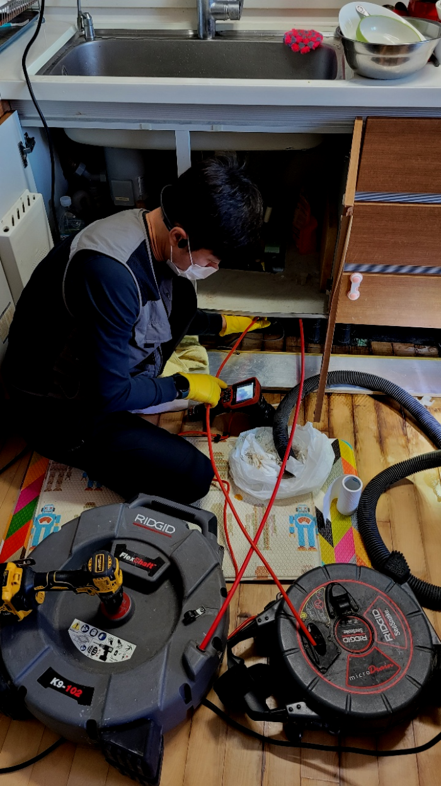
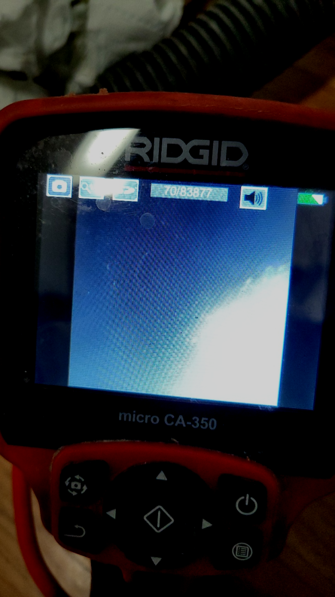
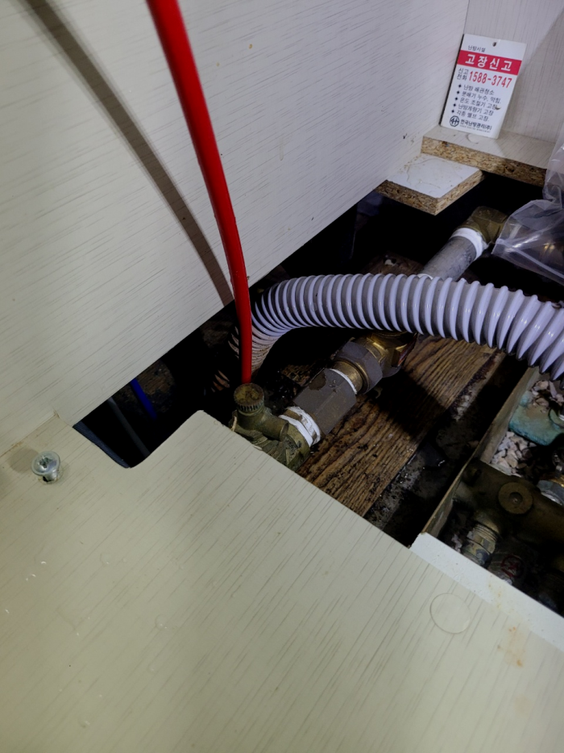
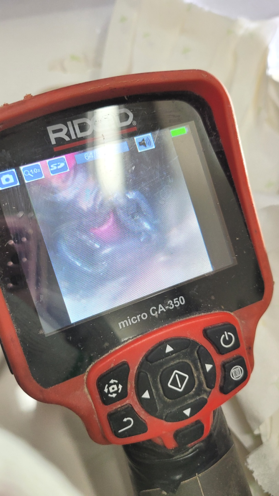
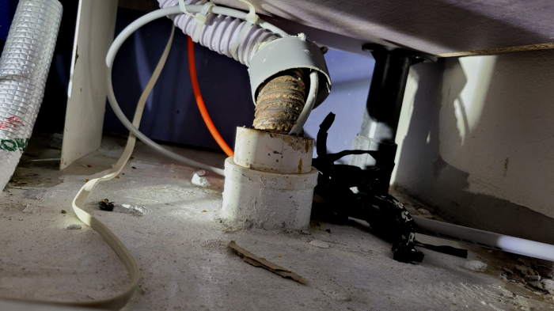
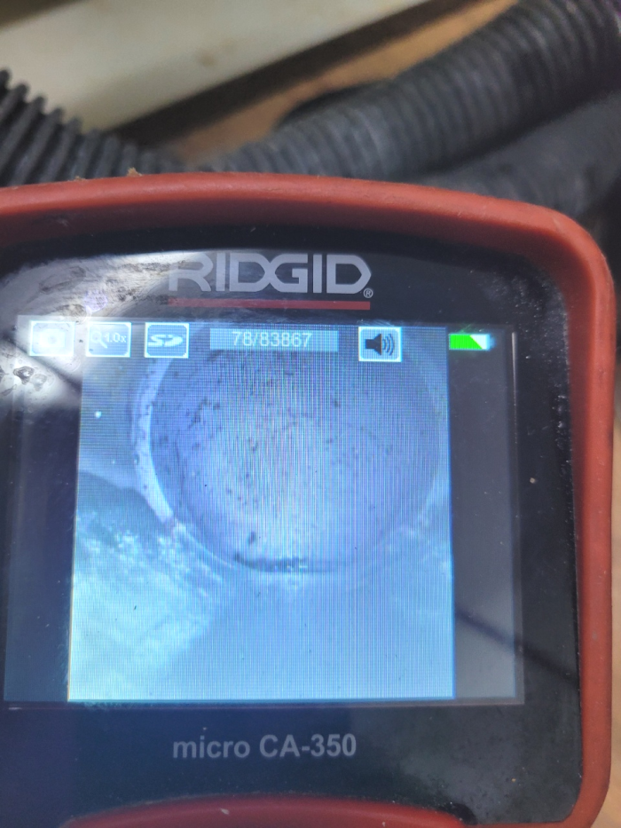

🏠 영통 싱크대하수관수리 망포동 배수관역류 하수구설비
수원 망포동 싱크대막힘 전문 시공 후기

📋 작업 개요
- 위치: 수원 망포동, 망포동, 수원
- 서비스 유형: 싱크대막힘, 변기막힘, 하수구막힘, 배관막힘, 역류해결, 뚫는업체, 배관청소
- 작업 일시: 2023. 12. 11. 0:07
- 업체명: 하수구수사대 (010-5615-2118)
🔍 문제 상황
안녕하세요^^
설비전문업체 "하수구수사대"를 찾아주셔서 감사드려요^^
집안 곳곳의 배수구는 하루도 쉴 틈 없이 사용되는 부분인 만큼 주기적인 청소와 관리가 무엇보다 중요합니다. 특히 배수구는 물과 각종 이물질이 흐르는 곳이기에 제때 관리하지 않으면 악취와 막힘 등의 문제가 생길 수 있습니다.
우리의 업무는 단순히 막힌 배수배관을 파괴하는 것이 아니라, 그 문제를 책임지고 배수까지 어떤 막힘도 신속하게 해결합니다. 출장비가 없는 것은 고객에게 부담을 주지 않기 위한 것이며, 어떤 상황에서든 우리는 문제를 해결합니다.
영통 싱크대하수관수리 망포동 배수관역류 하수구설비
🔎 원인 분석
💡 전문가 진단: 영통 싱크대하수관수리 망포동 배수관역류 하수구설비
만약에 작업을 했는데 배출구완벽하게 통수가 안되었을 경우 생활하다보면 또 똑같은 현상이 발생하여 스트레스를 받게 되고 그때서야 추가작업을 의뢰해도 거절하는 곳이 많기 때문에 한번 할때 제대로된 업체에 의뢰하여 확실하게 하는것이 좋아요.
배수구 내부에 어느 정도 이물질이 쌓여있는지 확인하기 위해서는 내시경 카메라를 넣고 원인을 파악하는데요. 기름 슬러지가 원인이 되어 막혔다면 내시경 카메라가 뿌옇게 보이기 때문에 일단 석션 장비로 통수 작업을 시켜준 뒤에 내시경을 다시 넣게 됩니다.
샤프트장비는 배출구내부 배관 오염 원인인 기름 슬러지를 효과적으로 제거 하는데 도움이 돼서 자주 쓰이게 되요. 노즐의 회전력을 이용하여 스케일링 작업을 진행하는만큼 찌꺼기가 하나로 뭉쳐진 부근 위주로 청소를 하게돼요.
예전에는 아무래도 전문장비가 없으면 배수구 막힘을 발생하면 배수관을 다 틀어내서 큰 송사를 해야 하는 경우가 많았는데요. 그렇기에 많은 고객님들이 번거롭고 부담스럽다는 생각을 하실수 있었던 곳입니다. 하지만 이제는 배출구전문장비를 활용해서 신속하게 문제를 해결할수 있어서 많이 좋았습니다.
사전에 고객분들께 자세한 작업 내용과 비용에 대한 부분을 설명드려 투명한 견적으로 작업을 진행해드리며 고객분들도 견적에 대한 오해나 이해가 안되는 부분 없이,또 과잉 시공 걱정없이 시공을 받을 수 있도록 해드립니다.
이번 현장은 다행히도 배수관막힘을 셀프로 해결하기 위한 시도를 과하게 시도하지는 않고 저희를 불러주셔서 더욱더 문제가 심각해지기 전에 해결할 수 있었다는 부분이 다행인 부분이었습니다.

🔧 작업 과정
배수관전문업체를고르시는게 어째서 꼼꼼해야되냐면 제대로뚫기위해서인데요.의뢰하신업체가 잘못하는곳이면 대충보기만하고 가버리고 잠시동안 물이흐르게하고 나몰라라하기도해요.
안쪽에위치한 기름때들을 강력한압력으로 청소하는 석션기가있고 기계의헤드에 붙어있는 360도로회전하는체인으로 배출관 이물질을제거할수있는 스케일링기계도 갖춰져있습니다
하수 안에 누적된 침전물들은 자연스럽게 사라지는게아니고 계속쌓이다가 크기가부풀면서 엄청난일이 일어나게되는데요.
오늘 방문했던 단독주택에서는 주방배수관부터 실내에 있는 배관들이 곳곳마다 막히게 되어 검사했더니 전체 배관들이 모여서 빠지는 메인배관이 막힌 거더라고요
일단 건물관리인분께 이런 부분으로 인해 막힘이 발생된 것 같으니 함께 확인해 보기로 하였고, 하수배관 안쪽에 이물질들을 제거하기 위하여 석션기를 배관으로 넣어 작동을 진행했습니다.
이 장비는 밖에서 흡입을 전문으로 하는 석션기와는 다른 작업 방식으로 체인이 전동드릴의 힘으로 인해서 돌아가는 거라 석회를 분쇄하면서 배관 안에 있던 머리카락도 다량 빠져나왔습니다.
내시경 장비가 배수관 배관 속을 훤히 보여주기에 하수구의 어느 한쪽도 놓치지 않고 꼼꼼하게 스케일링 작업을 진행할 수 있습니다. 배수관 막힘이 심한 구간도 집중적으로 작업을 할 수 있는 것이지요.
일 년 안으로 똑같은 이유로 재발해버릴 시 즉시 출발하여 처음과 같이 서비스해 드리니까 이와 같은 요소들도 생각해 주신다면 염려되는 마음이 나아지실 것입니다


✅ 작업 완료
이렇게 집안 곳곳, 그리고 음식점에서 퇴수구막힘 문제가 생겼을 경우에는 주저하지 마시고 편하게 연락 주시면 전국 어디라도 1시간 이내로 도착하니 궁금하신 점은 언제나 전화 주세요!
경기도 수원시 영통구 봉영로 1612 7층 710-A19호
#하수구막힘 #하수구뚫음 #하수구역류 #씽크대막힘 #싱크대역류 #오수관막힘 #하수구청소 #욕실하수구막힘 #변기막힘 #하수구뚫는비용 #싱크대수리 #화장실막힘




⚠️ 주방 싱크대 배관 막힘 예방 수칙
- ✅ 기름기가 묻은 식기나 프라이팬은 설거지 전 키친타올로 반드시 기름때를 닦아내세요.
- ✅ 주기적으로 싱크대 개수대에 뜨거운 물을 가득 받아 한 번에 내려 배관 내부 기름을 씻어내세요.
- ✅ 배수구 거름망을 미세한 필터로 사용하시고 음식물 찌꺼기가 틈으로 새어 들지 않게 관리하세요.
- ✅ 베이킹소다와 식초를 뜨거운 물과 함께 일주일에 한 번씩 부어주면 배관 살균과 막힘 예방에 좋습니다.
💡 핵심 정리
- 확실한 장비 작업(내시경 점검 및 샤프트 스케일링)으로 원인을 뿌리 뽑습니다.
- 작업 후 1년 이내에 동일한 부위 재발 시 100% 무상 A/S 서비스를 보장합니다.
- 서울 · 경기 · 인천 전 지역에 24시간 언제든 긴급 출동할 수 있도록 항시 대기 중입니다.
❓ 자주 묻는 질문 (FAQ)
🚨 수원 망포동 싱크대막힘 문제로 고민이신가요?
정확한 원인 진단과 확실한 시공으로 재발 없는 해결을 약속드립니다.
24시간 긴급 출동 | 서울 · 경기 · 인천 전지역 | 1년 내 재발 시 무상 A/S